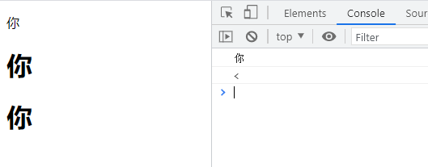
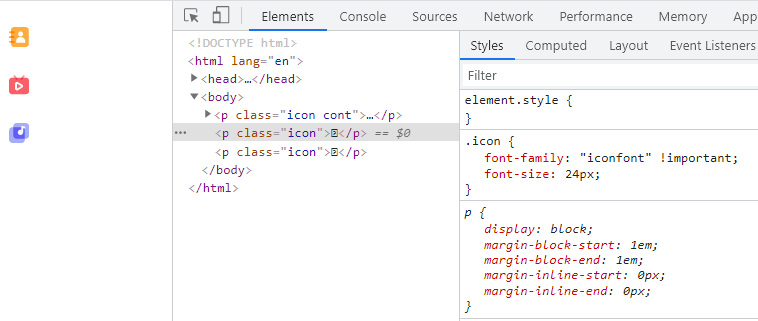

浅谈字符编码与字符集
概述
我们知道，计算机内部，所有信息最终都是一个二进制值。每一个二进制位（bit）有0和1两种状态，因此八个二进制位就可以组合出256种状态，这被称为一个字节（byte）。也就是说，一个字节一共可以用来表示256种不同的状态，每一个状态对应一个符号，就是256个符号，从00000000到11111111。
上个世纪60年代，美国制定了一套字符编码，对英语字符与二进制位之间的对应关系，做了统一规定。这被称为 ASCII 码。ASCII 码一共规定了128个字符的编码，这对英文来说是够用的，但是对于中文来说就远远不够了。每个国家就各自来对 ASCII 字符集做了拓展，最具代表性的就是国内的 GB 类的汉字编码模式，如GB2312字符集。
但当各国互相接轨时就出现了问题：世界上各国都有不同的编码方式（虽然都兼容了ASCII码），同一个二进制数字可以被解码成不同的符号。因此，要想打开一个文本文件，就必须知道它的编码方式，否则用错误的编码方式解读，就会出现乱码。这时候为了解决这个问题，最终的集大成者 Unicode 字符集出现了，它将世界上所有的符号都纳入其中，成功实现了每个数字代表唯一的至少在某种语言中使用的符号。
Unicode
Unicode 表示的是一个字符集（注意不是编码方式），但是它衍生出来的编码方案却有三种，分别是 UTF-32、UTF-16 和 UTF-8。而ASCII、GBK 等类编码模式的字符集和编码方式都是一一对应的。
UTF-8
UTF-8 就是在互联网上使用最广的一种 Unicode 的实现方式：
- 对于只有一个字节的符号，字节的第一位设为0，后面 7 位为这个符号的 Unicode 码。此时，对于英语字母UTF-8 编码和 ASCII 码是相同的
- 对于 n 字节的符号（n > 1），第一个字节的前 n 位都设为 1，第 n + 1 位设为0，后面字节的前两位一律设为 10。剩下的没有提及的二进制位，全部为这个符号的 Unicode 码
UTF-16 与 UTF-32
UTF-16（字符用两个字节或四个字节表示）和 UTF-32（字符用四个字节表示）都是用固定字节来存储，
只有 UTF-8 兼容 ASCII，UTF-32 和 UTF-16 都不兼容 ASCII，因为它们没有单字节编码。
BOM
BOM即Byte Order Mark字节序标记。BOM是为UTF-16和UTF-32准备的，用户标记字节序（byte order）。
UTF-8 BOM
UTF-8 BOM又叫UTF-8 签名，UTF-8不需要BOM来表明字节顺序，但可以用BOM来表明编码方式。当文本程序读取到以 EF BB BF开头的字节流时，就知道这是UTF-8编码了。Windows就是使用BOM来标记文本文件的编码方式的
我们将一个文本保存为utf-8 带BOM格式，使用fs模块读取(fs.readFile)下文件，得到：
<Buffer ef bb bf e5 93 88 e5 93 88>
我们再将其保存为utf-8 无 BOM格式，得到：
<Buffer e5 93 88 e5 93 88>
UTF-16 LE 与 UTF-16 BE
UTF-16，是定长编码，是双字节编码，所以两个字节保存时哪个在前，哪个在后关系到解析出字符的结果。
UTF-16BE (little endian), 俗称小头；UTF-16BE (big endian), 俗称大头；
出现 BE 和 LE 的编码，则是由于历史原因造成的：在 Mac 和 PC 机上，对字节顺序的理解是不一致的。如果一个文件不明确说明 UTF16 使用的是 BE 还是 LE，那么就需要通过 BOM 来指明了, 一般X86机器上都是UTF-16LE。其开始的两个字节也表示该字节数组是大端还是小端：FE FF表示大端，FF FE表示小端。
同样，我们分别读取一个UTF-16LE的文本与UTF-16BE的文本，结果如下：
UTF-16LE (little endian)
<Buffer ff fe c8 54 c8 54>
UTF-16BE (big endian)
<Buffer fe ff 54 c8 54 c8>
PS: win10 中记事本功能相比win7做了升级，编码方式更一目了然：
- 旧版的“Unicode”相当于新版的“UTF-16 LE”；
- 旧版的“Unicode big endian”相当于新版的“UTF-16 BE”；
HTML/CSS/JS的编码
首选明确的是HTML,CSS和JS，采用的都是Unicode字符集，只是编码方式会稍有不同。
HTML5 中的默认字符编码方式为 UTF-8，这在meta标签中可以声明：
<meta charset="UTF-8">
对于css文件，可以通过以下代码声明编码方式：
@charset utf-8
需要注意的是，这种只支持css文件，对于style标签是不支持的。
JavaScript中仅支持ucs-2编码，可以将它理解为utf16的子集，这里面的历史原因可以查看：Unicode与JavaScript详解
对于Unicode字符集的各自表示方式
| 类型 | 表示方式 |
|---|---|
| HTML | 十进制：&#{unicode};，如：你 十六进制： &#x{unicode};，如：你 |
| CSS | 只接受十六进制的unicode字符：\{unicode}，需要反斜杠转义，如：\4F60;，\3c; |
| Javascript | 4位十六进制： \u{unicode}，如：\u4F602位十六进制： \x{unicode}，如：\x3c |
我们以汉字“你”为例，可以通过js内置的方法获取他的十进制与十六进制编码：
'你'.charCodeAt(); // 20320 十进制
'你'.charCodeAt().toString(16) //"4f60" 十六进制
所以，我们分别在html，css，js中编写如下代码：
<style>.cont:after{ content: "\4F60";display: block;} </style>
<p>你</p>
<h1>你</h1>
<h1 class="cont"></h1>
<script>
console.log('\u4F60');
console.log('\x3c');
</script>
得到如下结果：

对于HTML而言，标准里面规定了一些特殊字符的使用，这些字符被称为：HTML转义字符串（Escape Sequence）也称字符实体(Character Entity) 。对于这些特殊字符，推荐直接使用转义字符来直接表示，当然，如果非要使用十进制或十六进制的unicode码来表示也可以：
<h1><</h1>
<h1><</h1>
<h1><</h1>
结果都是小于号
字体图标
字体图标其实已经应用很广泛了，iconfont, Font Awesome等都是常见的字体图标库，他的原理其实也很简单。
原理
HTML/CSS中解析出来的unicode字符会根据当前的字体库设置（font-family属性）来进行查找绘制：
<style>h1{font-family: serif;}</style>
<h1>你</h1>
浏览器会在serif字体（系统内置）中查找4F60所对应的样式进行绘制，从而展示在用户面前。
而css支持自定义字体，预先将不同的编码与图形样式（字体也是一种矢量图形）做好映射关系，生成字体文件，浏览器渲染时候就可以根据当前的字符去渲染对应的图形，从而实现字体图标。
字体图标的好处就是均为矢量图形，设备展示统一，且便于管理。字体文件其实是一套外形描述的集合，对于svg大家都不陌生：
<?xml version="1.0" standalone="no"?><!DOCTYPE svg PUBLIC "-//W3C//DTD SVG 1.1//EN" "http://www.w3.org/Graphics/SVG/1.1/DTD/svg11.dtd"><svg t="1624271624281" class="icon" viewBox="0 0 1024 1024" version="1.1" xmlns="http://www.w3.org/2000/svg" p-id="21339" xmlns:xlink="http://www.w3.org/1999/xlink" width="32" height="32"><defs><style type="text/css"></style></defs><path d="M512 62c140.401 0 297.65 117.936 303.265 292.033 33.697 33.697 33.697 101.089 28.080 146.017 73.008 67.392 89.857 179.712 73.008 224.641-11.232 44.928-39.312 67.392-95.472-22.464-11.232 50.544-67.392 106.704-67.392 106.704 73.008 16.848 95.472 84.241 73.008 112.321-22.464 28.080-224.641 67.392-325.73-16.848-67.392 56.16-241.489 78.624-303.264 33.697-56.16-50.544-11.232-112.321 44.928-129.169-50.544-22.464-56.16-101.089-56.16-101.089-33.697 44.928-78.624 89.857-95.472 5.617-5.617-89.857 61.777-202.177 101.088-224.641-16.848-39.312-11.232-78.624 22.464-101.089 11.232-101.089 73.008-325.73 297.65-325.73z" p-id="21340"></path></svg>
他里面就充斥着各种路径描述的说明，svg可以很容易转成ttf, woff等文件，原理基本类似。
unicode字符集里面，E000 至 F8FF属于用户造字区。原本是空的，常见的字体图标一般都在这个区域内。
彩色字体图标
字体在很长时间内都是只支持单色的，OT-SVG 和 COLR两个标准开始支持多色彩字体，chrome支持的是COLR标准，目前该标准的兼容性还不错，iconfont也做了适配，可以尝试使用：
